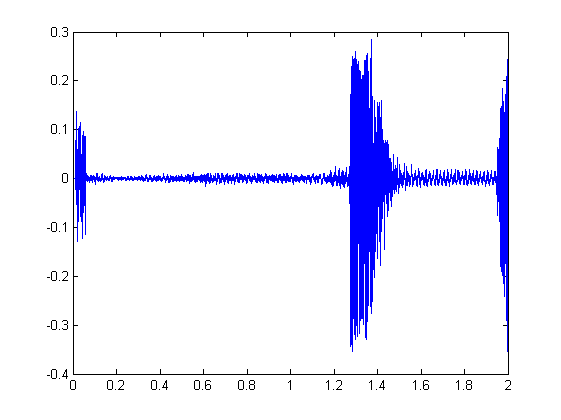
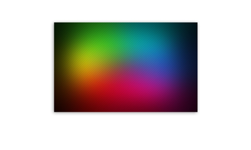
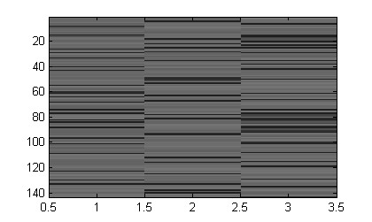
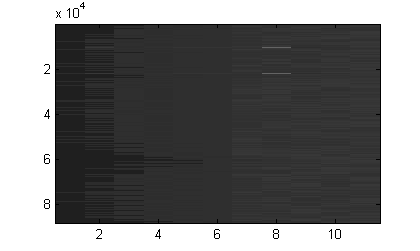

Kshitij Srivastava, 1510110200
[y, fs]=audioread('Signal_Processing_Audio.mp3');
y_n=y(:,1);
t=0:1/fs:2;
sz = size(y_n);
sx = size(t);
isvector(y_n);
ismatrix(y_n);
y_t=y_n(1:88201);
plot(t,y_t);
[m, n]=size(y_t);
Y=reshape(y_t,[m,n]);
audiowrite('output_sound.wav',Y,fs);
sound(Y, fs);

IMG = imread('RGB_Image.jpg');
redImage = IMG(:,:,1);
greenImage=IMG(:,:,2);
blueImage=IMG(:,:,3);
imshow(redImage);
imshow(greenImage);
imshow(blueImage);
I = rgb2gray(IMG);
imshow(I);
MAT=reshape(IMG,1,[]);
isvector(MAT);
REIMG=imresize(IMG, 0.5);
imshow(REIMG);

V = VideoReader('Signal_Processing_Video.mp4');
t_a=0:1/fs:2;
NEWV = VideoWriter('new_video.avi');
open(NEWV)
writeVideo(NEWV,rand(300))
close(NEWV)
[num, str]=xlsread('Text_Data.xlsx');
STR_ARR=char(str);
ASCII_STR=double(STR_ARR);
[a, b]=size(ASCII_STR);
MAT_STR = reshape(ASCII_STR,[143,3]);
image(MAT_STR);

[AUD, fs]=audioread('output_sound.wav');
AUD_ARR=num2str(AUD);
AUD_CHAR=char(AUD_ARR);
AUD_DOB=double(AUD_CHAR);
image(AUD_DOB);

[SAM, fs]=audioread('output_sound.wav');
SAM_FLOOR=floor(SAM);
SAM_CEIL=ceil(SAM);
SAM_ROUND=round(SAM);
FLOOR_ERROR=SAM-SAM_FLOOR;
CEIL_ERROR=SAM-SAM_CEIL;
ROUND_ERROR=SAM-SAM_ROUND;